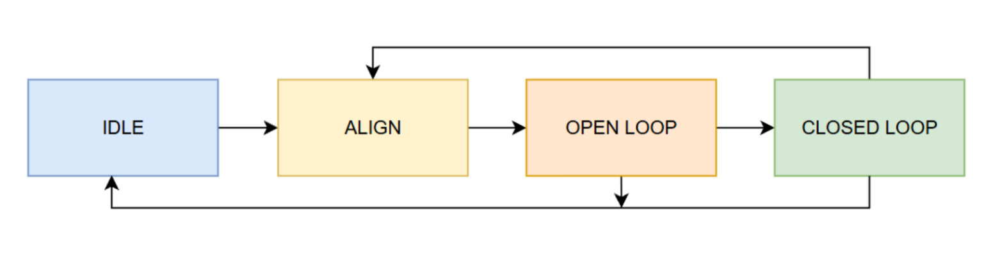

OSCAR BLDC Implementation
6 Step Commutation
The motor turns by cycling through six drive patterns. In each step, one phase is driven high, one is driven low, and the third floats.
| Step | Phase A | Phase B | Phase C | Floating (Watched) |
|---|---|---|---|---|
| 0 | High | Low | Float | C |
| 1 | High | Float | Low | B |
| 2 | Float | High | Low | A |
| 3 | Low | High | Float | C |
| 4 | Low | Float | High | B |
| 5 | Float | Low | High | A |
Six steps make one electrical revolution, so each step covers
60 electrical degrees. With 7 pole pairs, one full turn of the rotor
takes 42 steps.
Back EMF
A spinning rotor induces a voltage, called back-EMF, in every coil. On the floating phase, that voltage crosses the motor's center-point voltage halfway through each step. At that moment, the zero crossing tells the firmware where the rotor is.
How a Crossing Is Detected
Each phase reaches the MCU through a resistor divider. We use the MCU comparator built into the MCU rather than an ADC.
-
The back-EMF common (PA3) is the center-point reference on
COMP2's plus input. -
Every step,
COMP2's minus inputis switched to whichever phase is floating:A = PB7,B = PB3, andC = PA2. - On half the steps, the floating voltage rises through the center; on the other half, it falls.
-
The code flips COMP2's output polarity per step so that a crossing always looks like
the output going from
0 to 1. - That 0-to-1 edge raises an interrupt.
Motor States
The motor is always in one of four states in the main loop: IDLE, ALIGN, OPEN LOOP, and CLOSED LOOP.

Every failure coasts back to IDLE and retries after
500 ms; a closed-loop stall re-aligns straight away instead.
-
IDLE: all FETs and the comparator are off. When throttle is
48 or more, it moves to ALIGN, as long as 500 ms have passed since the last failed try and there have been fewer than 5 failures in a row. -
ALIGN: holds step 0 at
8% dutyfor300 ms. This parks the rotor in a known position so the first blind steps push it the right way. -
OPEN LOOP: steps the motor blind at
8% duty. The first step lasts5,000 µs, and each step is10 µs shorter, down to600 µs, which takes about1.2 s. Once steps are under1,000 µs, the main loop also polls the comparator to check that real crossings are showing up. -
CLOSED LOOP: crossings now set the timing. The main loop just ramps
the duty toward the throttle target at
2 counts per msand watches for trouble.
The handoff from OPEN LOOP to CLOSED LOOP needs all three of these:
- Steps have reached the
600 µs minimum. - At least
12 stepshave run at that minimum. -
The last
6 stepsin a row each showed a crossing, confirmed by3 matching comparator polls.
At handoff, the speed estimate starts at 600 µs and the first
blanking timer is started. If there is no handoff after
300 steps at the minimum, or the attempt runs past
3 s, it counts as a failure and the motor coasts back to IDLE.
Motor PWM and Phase Position
The speed of the motors is set through 6 PWM signals that are driven to the gate drivers. They are implemented as the high and low sides of 3 different PWM signals. These are used to get the phase positions from the commutation table.
As the commutation steps through the table, these PWM signals are altered to match and drive the motor.